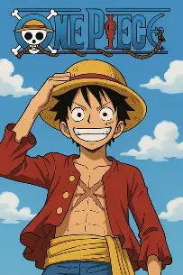
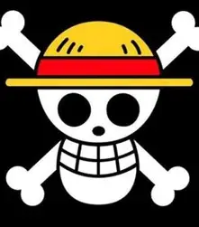

Una mattina, Monkey D. Luffy e la sua ciurma navigavano verso un’isola misteriosa comparsa improvvisamente sulla Log Pose.
Appena sbarcati, trovarono una vecchia mappa con una scritta: “Chi raggiungerà la cima della montagna troverà ciò che desidera di più.”
Luffy partì di corsa, seguito da Zoro, Nami, Sanji e gli altri. Durante il cammino affrontarono trappole, animali giganteschi e persino una banda di pirati rivali.
Alla fine, Luffy arrivò per primo sulla cima. Davanti a lui c’era un enorme forziere. Lo aprì pieno di entusiasmo… ma dentro non c’era oro.
C’era una semplice fotografia di una ciurma che rideva insieme.
Luffy scoppiò a ridere.
“Ah! Allora il vero tesoro è stare insieme!”
Gli altri lo raggiunsero e, per una volta, nessuno pensò al tesoro o alla prossima battaglia. Si misero semplicemente a ridere tutti insieme.
Poi Nami guardò la Log Pose.
“Ragazzi… abbiamo una nuova rotta!”
Luffy sorrise.
“ALLORA PARTIAMO!”
Qual è il personaggio più forte di One Piece?
Monkey D. Luffy
Secondo me, Luffy è uno dei personaggi più forti della serie.

La Ciurma di Cappello di Paglia
Personaggio
Lavoro nella ciurma
Monkey D. Luffy
Capitano
Roronoa Zoro
Spadaccino
Nami
Navigatrice
Usopp
Cecchino
Sanji
Cuoco
Tony Tony Chopper
Medico
Nico Robin
Archeologa
Franky
Carpentiere
Brook
Musicista
Jinbe
Timoniere
Il Jolly Roger di Cappello di Paglia

Il Jolly Roger è il simbolo della ciurma di Cappello di Paglia.
Rappresenta un teschio con il famoso cappello di paglia di Luffy.
Quiz di One Piece
Quiz di One Piece
Chi è il capitano della ciurma di Cappello di Paglia?